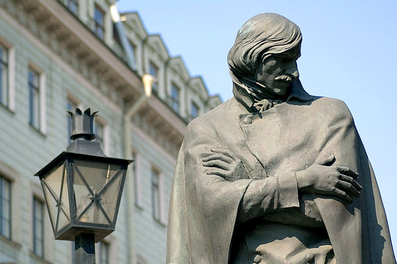

Nikolai Vasilyevich Gogol
The writer of 'The Overcoat'

Statue of writer Nikolay Gogol on Malaya Konyushennaya Ulitsa.
Here's a time line of Gogol's life:
- 1809 - Born in Ukrainian Cossack, Sorochyntsi
- 1820 - Nikolai Gogol went to a school of higher art in Nezhin (Nizhyn) (now Nizhyn Gogol State University).
- 1828 - Gogol went to Saint Petersburg.
- 1831 - The first volume of Gogol's Ukrainian stories (Evenings on a Farm Near Dikanka) was published, and met with immediate success.
- 1834 - Gogol was made Professor of Medieval History at the University of St. Petersburg, a job for which he had no qualifications.
- 1835 - Gogol resigned his chair.
- 1836 - 1848 - Gogol lived abroad, travelling through Germany and Switzerland.
- 1841 - The first part of Dead Souls was ready, and Gogol took it to Russia to supervise its printing.
- 1848 - Gogol returned to Russia from a pilgrimage to Jerusalem and passed his last years in restless movement throughout the country.
- 1852 - He burned some of his manuscripts, which contained most of the second part of Dead Souls.
- 1852 - Dies at the age of 42.
"We all came out of Gogol's 'Overcoat'."
-- Fyodor Dostoevsky